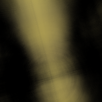
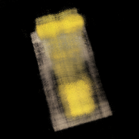
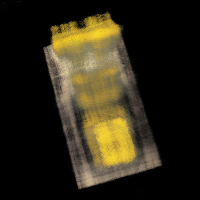
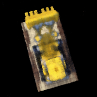
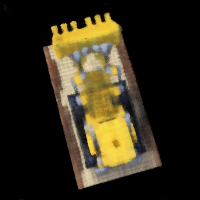

CS180 Project 4: Neural Radiance Fields
Overview
In this project, I implemented a full Neural Radiance Field (NeRF) pipeline from scratch, starting from camera calibration and dataset creation all the way to novel-view synthesis. I first fit simple coordinate-based MLPs to 2D images to understand positional encoding and network capacity, then extended this framework to 3D by generating rays, sampling points, and performing volumetric rendering on the Lego multi-view dataset. Finally, I applied the same pipeline to my own captured scene, analyzing how data quality, camera coverage, and hyperparameters affect reconstruction quality and the realism of the resulting fly-throughs.
Part 0: Camera Calibration and Dataset Creation
0.1 Calibrating My Camera
I first calibrated my phone camera using a grid of ArUco tags. For each calibration image, I detected the tags, picked the largest one, and used its four corners and the known physical tag size to collect 2D–3D correspondences. I then ran cv2.calibrateCamera to estimate the intrinsic matrix K and distortion coefficients, and saved them to intrinsics.npz, with an undistortion preview to sanity-check the result.
|
|
|
0.2 Capturing a 3D Object Scan
For my own NeRF scene, I photographed two separate scenes (and ended up completing the project with the Nailong scene). I photographed a Pokémon Legends: ZA game case placed next to a printed ArUco tag, and a Nailong toy. I took a small set of images from different viewpoints while trying to keep the tag visible, the object roughly centered, and the camera settings consistent with the calibration step (same device and focal length).
0.3 Estimating Camera Poses
Using the calibrated intrinsics, I estimated a camera pose for each object image. I first scanned all frames to find the ArUco tag ID that appears most often and treated that tag as the world origin. For each image containing that tag, I scaled K to image resolution, ran PnP variants, picked the pose with the lowest reprojection error, converted from world-to-camera to camera-to-world, and saved all poses to 02_poses.npz.
The screenshots below show the cloud of cameras surrounding the object and point more or less toward the same region in space, which matches how I captured the photos.
|
|
|
|
|

|
0.4 Undistorting Images and Creating a Dataset
I turned my object photos and poses into a NeRF-ready dataset. Using the intrinsics from intrinsics.npz, I first scaled the calibration matrix \(K\) to each image’s resolution, undistorted the images, and resized them to a common target size given by the minimum height and width across the set.
I then stacked the undistorted images into a single array, shuffled them with a fixed random seed, and split them into training and validation sets (about 90% train / 10% val) while keeping the corresponding camera-to-world poses from 02_poses.npz. Finally, I saved everything into my_data.npz with image arrays, pose arrays, and a single scalar focal length, and wrote out preview_train0.png and preview_val0.png to quickly verify that the dataset looked correct.
Part 1: Neural Field for a 2D Image
1.1 Network Architecture and Positional Encoding
In Part 1, I fit a coordinate-based neural network to individual 2D images. The model takes in normalized pixel coordinates \((u, v) \in [0,1]^2\) and predicts RGB values in \([0,1]^3\). I first apply sinusoidal positional encoding with maximum frequency \(L\), then feed the encoded coordinates into a small multilayer perceptron.
- Input: 2D pixel coordinates normalized to \([0,1]\).
- Positional encoding: for each scalar \(x\), I concatenate \(\sin(2^k \pi x)\) and \(\cos(2^k \pi x)\) for \(k = 0, \dots, L-1\), along with the original coordinates.
- MLP: 3 fully-connected hidden layers with width 128 or 256 (depending on the experiment) and ReLU activations, followed by a final linear layer.
- Output layer: linear layer followed by a sigmoid to map to RGB in \([0,1]\).
- Loss / optimization: mean-squared error between predicted and ground-truth RGB, optimized with Adam (learning rate \(1\text{e-}2\)).
- Training: at each step, I randomly sample a batch of pixels and train on their colors.
Overall, this setup follows the structure suggested in the project spec: positional encoding on normalized coordinates, a small ReLU MLP, a sigmoid output to RGB in \([0,1]^3\), and an MSE loss optimized with Adam.
1.2 Training Progression on the Provided Image (Fox)
For the provided “fox” image, I trained a higher-capacity model with \(L = 10\) positional encoding frequencies and a hidden width of \(W = 256\). This larger model captures high-frequency texture more quickly and resolves edges more sharply than the smaller baseline. Below I show the reconstruction progression at several training iterations, arranged in rows of three for clearer visualization.
|
|
|
|
|
|
|
|

|
||
1.3 Training Progression on My Own Image (Ollie)
I repeated the same experiment on my own image (“Ollie”) with \(L = 10\) and width \(W = 256\). The behavior is similar: the network first learns a blurry color field, then gradually sharpens object boundaries and small features as training progresses.
|
|
|
|
|
|
|
|
|
|
||
1.4 Effect of Width and Positional Encoding Frequency
To study how the architecture affects reconstruction quality, I trained four models on the fox image with different combinations of positional encoding frequency \(L\) and hidden width \(W\):
- \(L = 4, W = 128\)
- \(L = 4, W = 256\)
- \(L = 10, W = 128\)
- \(L = 10, W = 256\)
Below are the final reconstructions (step 3000) for each setting. Higher \(L\) allows the network to represent finer details and sharper edges, while larger \(W\) increases capacity and tends to reduce artifacts and improve overall PSNR, at the cost of more computation.
| \(L = 4\) | \(L = 10\) | |
|---|---|---|
| \(W = 128\) |
|
|
| \(W = 256\) |
|
|
1.5 PSNR Curve
Finally, I plotted PSNR over training iterations for the fox image with \(L = 4\) and \(W = 128\). The curve rises quickly in the first few hundred iterations as the network captures low-frequency structure, then gradually plateaus as it refines high-frequency details and noise.
Part 2: Fit a Neural Radiance Field from Multi-view Images
2.1 Ray Generation from Cameras
In Part 2.1, I implemented the mapping from image pixels to 3D rays in world space. Given a camera pose matrix c2w, intrinsics K, and pixel coordinates, I first convert pixels into camera coordinates and then into world coordinates:
- transform: takes points in camera space and applies the camera-to-world matrix to get points in world space.
- pixel_to_camera: given a pixel (u, v) and a depth s, computes the camera-space point using xc = s K-1 [u, v, 1]T, with careful broadcasting so it works on batches of pixels.
- pixel_to_ray: constructs a ray for each pixel by back-projecting to camera space, rotating into world space with the rotation from c2w, normalizing the direction, and using the camera center as the ray origin.
This gives me a ray origin and unit direction for every pixel in every training image, which is the starting point for volumetric rendering in NeRF.
2.2 Sampling Points Along Rays
In Part 2.2, I implemented stratified sampling along each ray. For each ray I linearly sample n depth values between a near and far plane (I used near = 2 and far = 6), then optionally jitter each interval during training:
- Start with evenly spaced depth values t between near and far.
- Compute midpoints and sample a random point inside each bin when perturb = True.
- Convert these depth values into 3D sample points using p = o + t d, where o is the ray origin and d is the ray direction.
The function returns both the sampled points and the corresponding depth values, which I later feed into the NeRF network and volume rendering step.
2.3 Ray Dataset and Visualization
In Part 2.3, I wrapped everything in a small dataset class that can efficiently sample rays for training:
- RaysData stores all training images, their camera poses, and a precomputed grid of pixel coordinates.
- sample_rays can either pick a random image and sample random pixels from it (per_image = True) or sample pixels uniformly across all images.
- For each selected pixel, I call pixel_to_ray to get a ray origin and direction and also return the ground-truth RGB from the image.
2.4 Training a NeRF on the Lego Dataset
In this part, I trained a NeRF model on the Lego multi-view dataset using the ray sampler and MLP from the previous parts. For each iteration, I sample a batch of rays, query the network at stratified points along each ray, and use volumetric rendering to composite the predicted colors. The training objective is the MSE loss between the rendered RGB values and the ground-truth pixel colors, and I track performance using PSNR on a held-out validation set.
Training Progression
| Step 150 | Step 500 | Step 750 |
|---|---|---|
|  |  |  |
| Step 1500 | Step 2000 | |
|  |  | |
| As training progresses, the shape, edges, and colors become much sharper, and the Lego figure is clearly recognizable with fewer artifacts. | ||
2.5 Volume Rendering
I implemented the discrete volume rendering equation in volrend. For each ray with samples indexed by \(i\), I compute the per-sample opacity \[ \alpha_i = 1 - \exp(-\sigma_i \Delta t_i). \] I then compute the accumulated transmittance using a cumulative product: \[ T_i = \prod_{j < i} (1 - \alpha_j). \] I formed one_minus_a = 1 - alpha, prepended a column of ones, and called torch.cumprod, then drop the last column to align \(T\) with the samples. The weights are weights = alpha * T, and the final color is the weighted sum
rgb_map = (weights[..., None] * rgbs).sum(dim=1)Then, I computed the accumulated opacity acc = weights.sum(dim=1, keepdim=True) and optionally composite onto a white background as rgb_map + (1 - acc) when white_bg=True. I verified correctness using the staff’s test snippet with random sigmas and rgbs; my volrend output matches the reference tensor within 1e-4 tolerance.
Part 2.6: Training with My Own Data
I struggled quite a bit with this one, ending up with an imperfect render. I trained a NeRF on my own captured dataset of a small yellow Nailong figurine placed on a table, and realized that I made a mistake with the color channels. However, I moved along and followed the full pipeline used earlier: ArUco-based camera calibration, pose estimation for each image, undistortion and resizing, and finally packaging everything into a NeRF-compatible dataset.
Training Setup
I trained the NeRF for about 2000 iterations using the following settings:
- Positional encodings: Lx = 10, Ld = 4
- Network width: 128–256 (depending on GPU memory)
- Batch size: 4096 rays
- Samples per ray: 32
- Near / far planes: 0.1 and 0.5
- Learning rate: 5e-4
During training, the model converged in terms of MSE loss, and the validation PSNR steadily improved from roughly 14 dB at the start to about 18–19 dB by 2000 iterations.
Intermediate Renders and Final GIF
I generated intermediate validation renders during training, but they definitely could use work. The model captured some coarse structure and overall color tone (that was in the dataset), but the reconstructions remained very blurry and streaked. This is consistent with the moderate PSNR values and suggests that the network is learning some aspects of the scene, but not enough detail to clearly reconstruct the object.

|
|
|
|
|
|
Problems Faced
Even though the training curves look reasonable, the final render is still quite abstract. There could be several reasons for this:
- Limited and challenging data: the object is small, close to the camera, and placed on a reflective table with a visually busy background. It may be difficult NeRF to separate the toy from the environment.
- Pose quality and camera coverage: although I estimated poses with ArUco tags, the cameras are clustered fairly tightly around the object, so there is limited space.
- Downsampled resolution: to keep training time manageable, I resized the images to a smaller resolution. This speeds up training but removes fine detail that the network could otherwise learn.
Hyperparameter and Code Experiments
To try to improve the reconstruction quality, I experimented with several changes:
- varying near/far planes (for example, [0.05, 0.3] and [0.2, 0.6]) to better match the true scene depth.
- increasing the MLP width to 256 for a higher-capacity network (at the cost of slower training).
- training for longer (up to several thousand iterations) when time and compute allowed.
- filtering out images with unreliable tag detections or partial occlusions of the object.
These tweaks helped the loss and PSNR curves, but the final render stayed blurry, which suggests that the main bottleneck is the dataset quality and capture setup rather than just the network architecture or learning rate.
Takeaways
Even though my NeRF of the Nailong toy did not reconstruct a crisp 3D model, I'm grateful for this project and the process was still very valuable. I implemented the full pipeline end-to-end, from camera calibration and pose estimation to dataset creation, NeRF training, and novel-view rendering. The results highlight how sensitive NeRFs are to camera coverage, pose accuracy, and clean, consistent input images, and show the practical gap between controlled datasets and quickly captured real-world data.